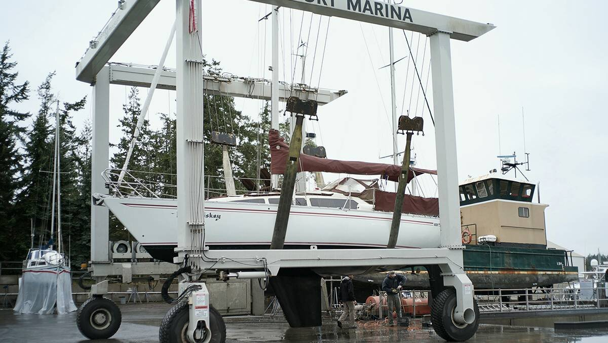

buying a sailboat

Why live on a sailboat?
1. The scenery changes everyday. If you're at anchor (see anchoring), the boat turns with the wind and you find yourself with a new view. If you don't like your neighbors, you have the option of hauling anchor and moving somewhere else. Having the freedom to move from place to place unhindered is neat.
2. You have a small ecological footprint. A boat is a gateway to self-reliance, with systems that are off the grid. With solar you consume no power, with wind propulsion there are no emissions, and because water is limited to your tanks, you are aware of how much you use and treat it like the precious resource that it is.
3. Low-cost home ownership. For a lot less money, you can own something and make it yours. You can anchor near a city center for free, and share the same view as expensive condos lining the shore. Note that unlike a house, a boat will only decrease in value. See details on costs.
4. You can travel with your house. This is ideal for us, as creatives, to be able to go to different places while our cocoon stays the same.
what boat to buy

When we began looking for a sailboat to buy, we'd spend evenings browsing listings online, trying to figure out what sort of vessel best suited our needs and budget. Next are questions to ask yourself to help narrow your search:
1. Budget. What is the max amount of money you're willing to spend on a yacht? Be realistic, be cautious. Keep in mind that you will probably put a lot more money into it afterwards, even more if you plan to take it offshore. There is a yacht out there for any budget, but it's important to remember that the cheaper it is the more time and work you will have to put back into it. If time is a factor, you may prefer to pick a turn key yacht. If you have a limited budget, choosing a smaller boat is a smart move. Dock fees are priced on boat length, and every bit of gear gets pricier when sized up. 8-11 m is the sweet spot when it comes to boats.
2. Location. Where do you want to be cruising/living? Depending on your goals, it may be better to buy the boat in another country, although this comes with its own set of complications. If you don't have much experience, you're better off choosing a boat near your home grounds. If you do this, you won't have to deal with visas or importation fees. For example, we moved to Vancouver from Montreal to get Pino, it was a good choice and still close to home. When buying a boat, keep in mind that you'll need to keep it somewhere. The boat may come with a lease on a slip in a marina that is transferable, but if your goal is to live on it the marina may not allow you to stay. Marinas only ever allow a small percentage of liveaboards, and some don't allow them at all. Note: many marinas accept liveaboards part of the year as part of a winter moorage program(typically October to April/May in Canada), but you'll have to move the boat after that time.
3. Experience. If you're a novice, starting out small is a good idea. Smaller boats give more immediate feedback, you get a feel for the wind and are less likely to make costly mistakes on a larger yacht afterwards.
4. Comfort. A full keel boat is more comfortable on a passage, but harder to maneuver onto a dock and may need more wind to move. Full keel boats are designed for cruising, the gear onboard and the layout of the living space will reflect this. Boats with a deep fin keel and tall rig, like ours, maneuver well but are more aggressive, they heel a lot. You get used to it, but it may not be ideal for you.
5. Intentions. If you want to travel the world, your yacht needs to be strong to endure rough waters and strong winds. There is not just one type of blue water boat, you will have to familiarize yourself with the features required for offshore travel. For example, Sven Yrvind sailed to Cape Horn in a 6.1 m (20 ft) boat named Bris, and Capucine Trochet sailed Taratari, a sailboat made out of jute, across the Atlantic Ocean. We recommend reading Seaworthy Offshore Sailboat by John Vigor. See our resources for more book references.
so you found a boat
Visit the boat. Inspect every inch of it, and take plenty of photos and/or videos. Take notes, or record your conversations with the owner or inspector. There is too much to know and hardly enough time to absorb it all in one go, you'll be grateful to have the notes to refer to afterwards. If you know anyone with experience on boats, have them come with you, or show them the listing/photos afterwards and ask them what they think. If you think you've found a boat, make an offer. If you are viewing boats that are sold through a broker, you'll go through them to make an offer.
Pre-Purchase Survey
If your offer is accepted, the next step is to have a pre-purchase survey. When signing the purchase and sales agreement, a condition reads as “subject to a suitable survey and sea trial." Both the survey and sea trial are done with an accredited marine surveyor, if they find a serious problem with the boat you can in turn request a price adjustment, or refuse to buy it altogether.
If you're not going through a broker, say you are buying a very inexpensive boat, you may not want to do a survey, but it's good practice. If you're a green sailor, you'll benefit from a surveyor's experience. If working with a broker, they may recommend a surveyor to you, if you trust the broker go ahead with it, but choosing your own is safer (more impartial). Even if you choose not to go through a broker, you can still use the services of a marine surveyor.
A pre-purchase survey consists of the following:
- An out-of-water survey
- An in-the-water survey
- A sea trial
As a buyer, you are responsible for coordinating the haul-out for the out-of-water survey with a boatyard and the visit from the surveyor. In general, it is best to block out time to do all of the surveys on the same day (a boat with a lot of complex systems may require more time). If you make a purchase through a broker, you don't have to attend the survey, but you'll learn a lot about the boat by being there. A survey will take most of the day, so plan accordingly. You, the buyer, will have to pay for the pre-purchase survey.
Out-of-water survey. An inspection of the boat out of water. Generally, an out-of-water survey will only require a half-lift at a boatyard, the boat stays in the slings while the surveyor sounds the hull, inspects the prop, shaft, keel, and thruhulls. A half-lift is usually one hour-long, boatyards will charge extra for every extra half hour spent in the slings.
In-the-water survey. In-the-water surveys consist of a cursory inspection of all of the systems on the boat. This kind of inspection is not destructive, they won't scrap, drill or remove anything, but they will test electronics, as well as safety systems, like automatic bilge pumps or LPG fume detection systems. The surveyor typically doesn't go too deep on electricals(they won't open walls to inspect wiring) or standing rigging, they only look to see if the boat is seaworthy(that is all insurance companies care about). If you want an in-depth electrical, engine or rig inspection, you'll need to hire a separate marine electrician, a rigger, a sailmaker and a marine engine mechanic.
Sea trials. Seal trials are done by marine surveyors, and the listing broker. The former owner of the boat may, or may not be on board. The goal of a seal trial is to test the engine when it's cold at the dock/hot underway, and to test the vessel's speed, maneuverability, equipment and safety features. The surveyor does not steer the vessel, they will inspect the boat while it is in operation. The broker or owner of the boat will likely operate the boat since the vessel is not yet yours.
After all the surveys are completed, the surveyor will spend a few days gathering their notes and photos in a document. They will send you this document(a PDF, generally). The document will list every detail of the boat, it will include photos, a list of items that need to be looked at and/or replaced, listings of all of the hardware, systems, notes on general condition of the boat, flaws(cosmetic and functional) etc. As green sailors, we found this document incredibly useful. We could see what was what, and where things were.
Loan
To buy Pino Devine & I each got a 10,000$ bank loan. We had savings, but didn't want to be left with an empty account after the purchase. That proved to be wise, given the cost of everything marine. We made a plan then, to pay off the loan within 3 years, which amounted to payments of around 600$ a month(we finished paying it off earlier). Buying a boat alone would have been unthinkable for either of us, pooling our earnings helped. If your goal is to buy a boat by yourself, get a boat that you're sure you can handle and pay off alone.
getting certified
You can get a boat without experience (like we did), but in Canada you need a couple of things first.
1. Pleasure Craft Operator Card. The test is easy, and covers the basic safety regulations, as well as buoyage. You can do the test online, and the card will be shipped to you afterwards. This test makes sure that you understand how to recognize different buoys, how to navigate alongside other boats etc.
2. A ROC certificate (radio operator's certificate). You need this to be able to operate a marine VHF radio. Check your area for ROC courses, it costs about 100$ per person. You can buy the manuals and study at home, then take the test on a scheduled date with an examiner. The test is a multiple choice written exam, and includes a few verbal questions about radio calling (need to learn Nato Phonetic Alphabet). You have to take this test, otherwise you won't be permitted to transmit on the radio (you can technically, but you will be in the wrong). Knowing how to talk on a VHF radio is important, especially if you've had an accident and need help.
3. Security gear. Even if you're just going for a short outing with your boat, you need to get basic safety gear, like lifejackets (one for every person aboard), a first aid kit, a PLB or EPIRB, good ground tackle etc.
4. Changing your boat name. First of all, ignore whatever anyone tells you about it being bad luck. Having a name that means something to you matters. In Canada, if your boat's name is registered with Transport Canada, changing it will cost you 250$(The cost changed on April 1st 2024). The wait time varies, it can take 1-2 months. It's possible your boat will only be licensed, in that case you can change the name at no cost, but if you leave Canada the vessel will need to be registered (see the difference between a licensed a registered boat). You can visit Transport Canada for information on how to change the name of a registered vessel. They will send you a certificate of registry, this piece of paper is very important. You will have to show it to customs whenever you're entering a new country by boat. The certificate expires about a few years, but they will send you a new one free of charge.
go sailing

If you already know how to sail, great! Otherwise, here is what you can do:
1. Get lessons. If you can afford lessons, do it. It will make you a more confident sailor.
2. Hire a captain. Again, if you can afford it, the best thing to do would be to hire a captain to teach you how to sail your own boat. All boats are different.
3. Go race. Go to yacht clubs and volunteer to race on their boats (we did this), you don't have to be part of the club to do it. You will learn a lot doing this. People who race push their boats to the limit, you can see how different boats behave and what not to do.
4. Just get out there! Once you know the basics, go out with your boat as much as you can and practice.
For the novice, there are many sailing manuals you should read. If you know a sailor, ask them to come along. The first time we pushed off the dock we didn't put the sails up. Picking a calm day to make your first outing is probably a good idea. Also, if your boat is in a river, go out at slack tide. Don't be afraid to ask others for help. Walk around the docks, ask questions and make friends. Sailors like to share knowledge, they will be glad to help.

moorage
You have a boat? Great! But where do you keep it?
Living at anchor, that is, in a bay somewhere tethered to the earth with ground tackle is free. Some bays will have moorings installed that you can tie to for a small fee (often around $10-15 per day). Living at anchor is the cheap way to go, although getting a good anchor and rode is important as it will keep your boat safe.

Marinas often have guest docks with power, WiFi and showers, for a medium-to-high cost ($50-90 per day for a 33 ft boat in the Salish Sea) The longer the boat though, the bigger the cost. Some marinas charge per dock space rather than boat size, beware of these places. Moorage near cities is more expensive, and the price goes up during the high season(summer). Winter moorage is generally much cheaper. Some docks will permit you to stay for free for 1-3 hours, others will charge a reduced rate for half-day stays, this might be worth it if you only need to refill water, or pickup a lot of groceries.
Paying for annual moorage is a good idea, but keeping a boat in a marina means getting liability insurance, which in turn, means you'll need a survey, resulting in a seemingly interminable domino effect which can incur many more costs. Depending on the age of your boat, and when it was last surveyed (if ever), you may need a full condition out-of-water survey. This means paying a marina to lift your boat out, and paying the surveyor. A surveyor will point out mandatory items that need fixing and/or replacing, if these items are not complied with within 60 days the insurance will be void.
Living aboard your boat will cause wear from regular use of the space. If staying at a marina in your home country for long periods, paying for liveaboard fees (up to $150 extra per month) is necessary. If staying in a marina in a foreign country, liveaboard fees are often waived. Some marinas charge for electricity and water, be sure to take that into account, especially if you have plans to winter there and that your heating is electric. In winter, marinas charge less than in the high season. A marina that charges 1000$ per month in the summer can charge 600$ in the winter.